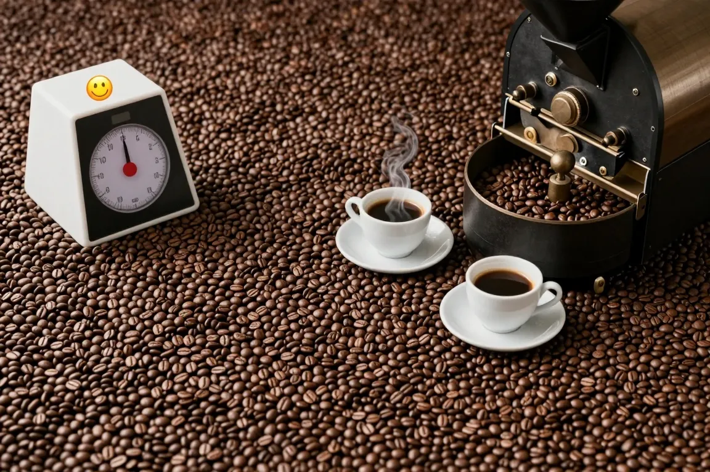

Et talende hode i et vertikalt bilde, der talen vises som enorme bildetekster, ett til tre ord om gangen. Hvert ord spretter inn på taktslaget, og det gjeldende ordet får en lys farge.

Kjerneidé
Gjør hvert ord synlig i det øyeblikket det sies: bildeteksten er hovedbildet, og seeren leser og hører det samme slaget.
Designprinsipper
Sett bildetekster på 72px til 110px i et bilde på 1080x1920, med 1 til 3 ord på skjermen om gangen.
Plasser tekstblokken på 55 % til 65 % av bildehøyden, sentrert, innenfor en sikker marg på 64px.
Farg det talte ordet gult (#FFE600) eller grønt (#3DFF7A) og hold de andre ordene hvite.
Legg til et svart omriss på 6px eller en hard skygge på 4px på hvert ord.
La hvert ord sprette inn med 90 % til 110 % skala over 6 til 8 bilder ved 30 bps.
Tidfest hvert ord til lyden innenfor 2 bilder.
Bruk en fet, tung sans i versal og høyst én emoji eller ett ikon per setning.
Antimønstre
Hele setninger på 12 ord på skjermen
Tynn skrift, seriff eller skrivskrift
Bildetekster i de nederste 15 % av bildet, under appknappene
Bildetekster med lav kontrast uten omriss
Undertekster som henger mer enn 4 bilder etter stemmen